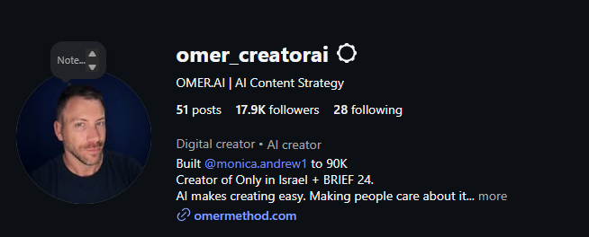

<meta charset="utf-8">
<title>OMER METHOD — Story Frames</title>
<style>
/* ═══════════════════════════════════════════════════════════════════════
   OMER METHOD — story sequence
   System: "Signal & Grain". Dark field, one cyan signal, human faces
   surfacing through grain, evidence set like a specimen sheet.
   Ten frames, ten different compositions, one typographic grammar.
   ═══════════════════════════════════════════════════════════════════════ */

:root{
  --ground:#070A11;
  --ground-2:#0C1220;
  --ink:#080B12;
  --paper:#F2F4F8;
  --deck:#A9B2C4;
  --muted:#6E7889;
  --cy:#22D3EE;
  --cy-deep:#0B93B0;
  --vi:#A78BFA;
  --hair:rgba(255,255,255,.10);
  --noise:url("data:image/svg+xml,%3Csvg xmlns='http://www.w3.org/2000/svg' width='220' height='220'%3E%3Cfilter id='n'%3E%3CfeTurbulence type='fractalNoise' baseFrequency='0.85' numOctaves='4' stitchTiles='stitch'/%3E%3C/filter%3E%3Crect width='220' height='220' filter='url(%23n)'/%3E%3C/svg%3E");
}
*{margin:0;padding:0;box-sizing:border-box}
body{background:#14171d;font-family:Rubik,sans-serif;-webkit-font-smoothing:antialiased;
     text-rendering:optimizeLegibility}

.frame{position:relative;width:1080px;height:1920px;overflow:hidden;
       background:var(--ground);color:var(--paper)}
.frame + .frame{margin-top:48px}

/* content band. Instagram covers the top ~250 and bottom ~250.
   Critical type lives between 330 and 1620. Imagery may bleed past. */
.pad{position:absolute;left:88px;right:88px;top:330px;bottom:300px;
     display:flex;flex-direction:column;z-index:4}
.grow{flex:1;min-height:0}

/* ── shared atmosphere ── */
.grain{position:absolute;inset:0;background-image:var(--noise);background-size:220px 220px;
       opacity:.13;mix-blend-mode:overlay;pointer-events:none;z-index:3}
.vig{position:absolute;inset:0;pointer-events:none;z-index:3;
     background:radial-gradient(120% 78% at 50% 42%,transparent 38%,rgba(4,6,11,.72) 100%)}
.layer{position:absolute;pointer-events:none}

/* ── chapter ticker: the one element that never moves ── */
.tick{position:absolute;left:88px;top:258px;display:flex;align-items:center;gap:6px;z-index:6}
.tick i{display:block;width:48px;height:4px;border-radius:3px;background:rgba(255,255,255,.15)}
.tick i.on{background:var(--cy);box-shadow:0 0 20px rgba(34,211,238,.85)}
.tick b{margin-left:24px;font-size:21px;font-weight:600;letter-spacing:.26em;
        color:var(--muted);text-transform:uppercase;direction:ltr}
.paperframe .tick i{background:rgba(8,11,18,.16)}
.paperframe .tick i.on{background:var(--cy-deep);box-shadow:0 0 18px rgba(11,147,176,.45)}
.paperframe .tick b{color:#5A6478}

/* ═══ TYPOGRAPHIC GRAMMAR ═══
   overline → lead → deck → hebrew → data. Every frame reads in that order,
   whatever the composition does. */

.over{font-size:23px;font-weight:600;letter-spacing:.3em;text-transform:uppercase;
      color:var(--cy);direction:ltr;display:flex;align-items:center;gap:18px}
.over::after{content:'';flex:1;height:1px;background:linear-gradient(90deg,rgba(34,211,238,.5),transparent)}
.over.plain{color:var(--muted)}
.over.plain::after{background:linear-gradient(90deg,rgba(255,255,255,.18),transparent)}

.lead{direction:ltr;font-weight:800;letter-spacing:-.032em;line-height:1.04;
      font-size:104px}
.lead.xl{font-size:122px}
.lead.md{font-size:86px;line-height:1.06}
.lead.sm{font-size:72px;line-height:1.1;letter-spacing:-.026em}
.lead .cy{color:var(--cy)}
.lead .dim{color:#5D6779}

.deck{direction:ltr;font-size:36px;font-weight:400;line-height:1.5;color:var(--deck);
      max-width:830px}
.deck b{font-weight:700;color:var(--paper)}
.deck .cy{color:var(--cy);font-weight:500}
.deck em{font-style:italic}

/* Hebrew is a sibling voice, not a caption: same paper white, its own rail. */
.he-line{direction:rtl;text-align:right;font-size:50px;font-weight:600;line-height:1.28;
         color:var(--paper);letter-spacing:-.012em;
         border-left:3px solid var(--cy);padding-left:32px;max-width:860px}
.he-line.sm{font-size:43px;font-weight:500;line-height:1.3}
.he-line.right{text-align:right}
.he-line.bare{border:none;padding:0}
.he-block{border-right:3px solid var(--cy);padding-right:32px;max-width:880px;margin-left:auto}
.he-block.right{}
.he-block .he-line{border:none;padding:0;max-width:none}
.he-deck{direction:rtl;text-align:right;font-size:31px;font-weight:400;line-height:1.52;
         color:var(--deck);margin-top:15px}

.langs{display:flex;flex-direction:column;gap:20px;direction:ltr}
.langs .n{font-size:56px;font-weight:800;color:var(--cy);letter-spacing:-.03em;
          margin-right:20px;vertical-align:-4px}
.langs .l{font-size:27px;font-weight:500;color:var(--deck)}
.langs .lrow{display:flex;align-items:center;gap:20px;font-size:30px;font-weight:600;
             color:var(--paper);padding:20px 0;border-top:1px solid var(--hair);
             border-bottom:1px solid var(--hair)}
.langs .lrow i{display:block;width:5px;height:5px;border-radius:50%;background:var(--cy);opacity:.7}
.wordfield{display:flex;flex-wrap:wrap;gap:14px 26px;direction:ltr;
           -webkit-mask-image:linear-gradient(180deg,#000 58%,transparent 100%);
           mask-image:linear-gradient(180deg,#000 58%,transparent 100%)}
.wordfield span{font-size:58px;font-weight:800;letter-spacing:-.03em;color:var(--paper);opacity:.9}
.wordfield span:nth-child(3n){color:var(--cy)}
.wordfield span:nth-child(4n){opacity:.42}
.wordfield span:nth-child(7n){opacity:.22}
.he-deck.tight{font-size:28px;line-height:1.45;margin-top:12px}
.paperframe .he-deck{color:#4A5468}
.paperframe .he-block{border-right-color:var(--cy-deep)}
.he-line .cy{color:var(--cy)}

.rule{height:1px;background:var(--hair)}
.rule.cy{height:2px;width:120px;background:var(--cy);opacity:.8;border-radius:2px}

/* pull quote — a second voice inside a frame */
.pull{direction:ltr;font-size:52px;font-weight:500;line-height:1.24;color:var(--paper);
      letter-spacing:-.02em;padding-left:36px;border-left:3px solid rgba(34,211,238,.55)}
.pull .cy{color:var(--cy);font-weight:700}

/* small data type */
.cap{font-size:24px;font-weight:500;letter-spacing:.05em;color:var(--muted);direction:ltr}
.chips{display:flex;flex-wrap:wrap;gap:12px;direction:ltr}
.chip{font-size:25px;font-weight:600;color:var(--cy);background:rgba(34,211,238,.09);
      border:1px solid rgba(34,211,238,.30);border-radius:100px;padding:11px 24px;white-space:nowrap}
.chip.plain{color:#9AA4B6;background:rgba(255,255,255,.045);border-color:rgba(255,255,255,.13)}

/* ── photography ── */
.ph{position:absolute;overflow:hidden}
.ph img{position:absolute;display:block;max-width:none;
        filter:contrast(1.08) saturate(1.06) brightness(1.02)}
.ph::after{content:'';position:absolute;inset:0;pointer-events:none;
           background:linear-gradient(180deg,rgba(7,10,17,.28),transparent 34%,rgba(7,10,17,.30));
           mix-blend-mode:multiply}
.ph .tone{position:absolute;inset:0;pointer-events:none;mix-blend-mode:soft-light;
          background:linear-gradient(150deg,rgba(34,211,238,.42),rgba(167,139,250,.30))}

/* ══════════════ 01 · HOOK ══════════════ */
#f01{background:#05070D}
#f01 .bloom{inset:0;overflow:hidden;z-index:0}
#f01 .bloom img{position:absolute;width:5000px;left:-1520px;top:-820px;
                filter:blur(78px) saturate(1.55) brightness(.95) hue-rotate(-14deg)}
#f01 .wash{position:absolute;inset:0;z-index:1;pointer-events:none;
  background:linear-gradient(180deg,rgba(5,7,13,.58) 0%,rgba(5,7,13,.30) 26%,rgba(5,7,13,.80) 62%,rgba(5,7,13,.96) 100%)}
/* the still: a cinematic band across the foot of the frame, data set on top of it */
#f01 .still{left:0;right:0;top:1272px;height:648px;overflow:hidden;z-index:2}
#f01 .still img{position:absolute;width:4314px;left:-378px;top:-598px;
  filter:contrast(1.2) saturate(.9) brightness(.52)}
#f01 .still .fade{position:absolute;inset:0;
  background:linear-gradient(180deg,#05070D 0%,rgba(5,7,13,.62) 18%,rgba(5,7,13,.50) 60%,rgba(5,7,13,.86) 100%)}
#f01 .qm{position:absolute;left:22px;top:262px;font-size:520px;font-weight:900;line-height:.7;
         color:rgba(255,255,255,.055);z-index:2;pointer-events:none;direction:ltr}
#f01 .nums{display:flex;gap:0;direction:ltr;border-top:1px solid rgba(255,255,255,.22);padding-top:28px}
#f01 .nums > div{flex:1;padding-right:20px}
#f01 .nums .n{font-size:92px;font-weight:800;letter-spacing:-.045em;line-height:.94;
              background:linear-gradient(180deg,#EAF9FD,#5FD8EC);-webkit-background-clip:text;
              background-clip:text;color:transparent}
#f01 .nums .l{font-size:21px;font-weight:600;letter-spacing:.22em;color:#9AA4B6;
              margin-top:11px;text-transform:uppercase}

/* ══════════════ 02 · ORIGIN ══════════════ */
#f02{background:radial-gradient(96% 62% at 50% -12%,#241C4A 0%,#0D1024 42%,#070A11 78%)}
#f02 .beam{position:absolute;left:50%;top:-140px;width:1500px;height:1500px;margin-left:-750px;
  clip-path:polygon(43% 0,57% 0,100% 100%,0 100%);z-index:1;pointer-events:none;
  background:linear-gradient(180deg,rgba(167,139,250,.40),rgba(34,211,238,.10) 46%,transparent 76%);
  filter:blur(28px)}
#f02 .halo{position:absolute;left:50%;top:-260px;width:760px;height:760px;margin-left:-380px;
  border-radius:50%;z-index:1;pointer-events:none;
  background:radial-gradient(circle,rgba(199,180,255,.55),transparent 62%);filter:blur(46px)}
#f02 .tl{display:flex;align-items:flex-end;gap:0;direction:ltr;border-top:1px solid var(--hair);
         padding-top:26px}
#f02 .tl .seg{flex:1;position:relative}
#f02 .tl .yr{font-size:26px;font-weight:700;letter-spacing:.12em;color:var(--muted)}
#f02 .tl .yr.now{color:var(--cy)}
#f02 .tl .bar{height:4px;margin-top:16px;border-radius:3px;
              background:linear-gradient(90deg,rgba(167,139,250,.30),rgba(34,211,238,.85))}
#f02 .tl .dot{position:absolute;right:0;top:32px;width:18px;height:18px;border-radius:50%;
              background:var(--cy);box-shadow:0 0 26px rgba(34,211,238,.9)}

/* ══════════════ 03 · MONICA ══════════════ */
#f03{background:#060911}
#f03 .band{left:0;right:0;top:0;height:617px;overflow:hidden;z-index:1}
#f03 .band img{position:absolute;width:4314px;left:-378px;top:-598px;
               filter:contrast(1.12) saturate(1.12)}
#f03 .band .fade{position:absolute;inset:0;
  background:linear-gradient(180deg,rgba(6,9,17,.55) 0%,rgba(6,9,17,0) 26%,rgba(6,9,17,0) 56%,#060911 100%)}
#f03 .band .edge{position:absolute;inset:0;
  background:linear-gradient(90deg,rgba(6,9,17,.62),transparent 22%,transparent 78%,rgba(6,9,17,.62))}
#f03 .glowline{position:absolute;left:0;right:0;top:615px;height:2px;z-index:2;
  background:linear-gradient(90deg,transparent,rgba(34,211,238,.75),transparent)}
#f03 .pad{top:706px}
#f03 .tick{top:648px}
#f03 .statline{display:flex;direction:ltr;border-top:1px solid var(--hair);padding-top:24px;gap:0}
#f03 .statline > div{flex:1}
#f03 .statline .n{font-size:54px;font-weight:800;color:var(--cy);letter-spacing:-.03em;line-height:1}
#f03 .statline .l{font-size:21px;font-weight:500;letter-spacing:.14em;color:var(--muted);
                  margin-top:10px;text-transform:uppercase}

/* ══════════════ 04 · THREE WORLDS ══════════════ */
#f04{background:linear-gradient(180deg,#080C16 0%,#070A11 60%)}
#f04 .trip{left:0;right:0;top:756px;height:600px;display:flex;gap:6px;z-index:2}
#f04 .tile{position:relative;flex:1;overflow:hidden}
#f04 .tile img{position:absolute;width:3723px;top:-530px;filter:contrast(1.14) saturate(1.05)}
#f04 .tile .scrim{position:absolute;left:0;right:0;bottom:0;height:212px;
  background:linear-gradient(180deg,transparent,rgba(6,9,16,.80) 46%,rgba(6,9,16,.97))}
#f04 .tile .idx{position:absolute;left:26px;top:24px;font-size:22px;font-weight:800;
  letter-spacing:.2em;color:var(--cy);direction:ltr;
  text-shadow:0 2px 14px rgba(0,0,0,.9)}
#f04 .tile .cap2{position:absolute;left:24px;right:18px;bottom:24px;direction:ltr}
#f04 .tile .cap2 .k{font-size:17px;font-weight:700;letter-spacing:.13em;color:var(--cy);
                    text-transform:uppercase;line-height:1.3;white-space:nowrap}
#f04 .tile .cap2 .t{font-size:33px;font-weight:800;letter-spacing:-.02em;margin-top:9px;line-height:1.1}
#f04 .tile .cap2 .m{font-size:20px;font-weight:500;color:#9AA4B6;margin-top:8px;line-height:1.3;white-space:nowrap}
#f04 .ghost3{position:absolute;right:52px;top:296px;font-size:430px;font-weight:900;line-height:.72;
  color:transparent;-webkit-text-stroke:2px rgba(34,211,238,.13);z-index:0;direction:ltr}

/* ══════════════ 05 · WALL OF EMOTION ══════════════ */
#f05{background:radial-gradient(88% 52% at 78% 22%,#12203A 0%,#080C16 52%,#060910 100%)}
#f05 .mon{display:flex;align-items:flex-end;gap:26px;direction:ltr}
#f05 .mon .big{font-size:212px;font-weight:900;line-height:.8;letter-spacing:-.05em;
  background:linear-gradient(170deg,#DFFBFF,#22D3EE 55%,#0B93B0);-webkit-background-clip:text;
  background-clip:text;color:transparent;
  filter:drop-shadow(0 0 44px rgba(34,211,238,.34))}
#f05 .mon .side{padding-bottom:22px}
#f05 .mon .side .a{font-size:30px;font-weight:700;line-height:1.2;color:var(--paper)}
#f05 .mon .side .b{font-size:22px;font-weight:500;letter-spacing:.16em;color:var(--muted);
                   text-transform:uppercase;margin-top:8px}
.cmt{display:flex;gap:18px;direction:ltr;text-align:left;border-radius:20px;padding:22px 24px;
     background:rgba(255,255,255,.05);border:1px solid rgba(255,255,255,.10)}
.cmt .av{width:52px;height:52px;border-radius:50%;flex-shrink:0;
         background:linear-gradient(140deg,#33405F,#161D2E)}
.cmt .bd{flex:1;min-width:0}
.cmt .tx{font-size:27px;font-weight:400;line-height:1.32;color:#DDE3EE}
.cmt .tx[dir="rtl"]{text-align:right}
.cmt .mt{font-size:20px;font-weight:600;color:var(--muted);margin-top:9px;letter-spacing:.06em}
.cmt .mt b{color:var(--cy);font-weight:800}
.cmt.white{background:var(--paper);border-color:#fff;
           box-shadow:0 26px 60px rgba(0,0,0,.55)}
.cmt.white .tx{color:#12172400;color:#131824;font-size:31px;font-weight:500;line-height:1.3}
.cmt.white .mt{color:#6A7488}
.cmt.white .mt b{color:#0B93B0}
.cmt.white .av{background:linear-gradient(140deg,#C3CBDA,#8D97AB)}

#f05 .fan .cmt{position:absolute;left:0;right:0}

/* ══════════════ 06 · WALL OF ACTION ══════════════ */
#f05{background:linear-gradient(200deg,#04212B 0%,#060B14 46%,#060910 100%)}

#f05 .marq{position:absolute;right:-34px;top:120px;height:1560px;z-index:0;pointer-events:none;
  writing-mode:vertical-rl;overflow:hidden;white-space:nowrap;
  font-size:132px;font-weight:900;letter-spacing:.04em;color:transparent;
  -webkit-text-stroke:1.4px rgba(34,211,238,.07)}

/* ══════════════ 07 · THE INSIGHT (inverted) ══════════════ */
#f06{background:
  radial-gradient(70% 40% at 84% 6%,rgba(34,211,238,.16),transparent 62%),
  radial-gradient(60% 36% at 6% 96%,rgba(167,139,250,.14),transparent 60%),
  #F2F4F8;color:var(--ink)}
#f06 .grain{opacity:.30;mix-blend-mode:multiply}
#f06 .over{color:var(--cy-deep)}
#f06 .over::after{background:linear-gradient(90deg,rgba(11,147,176,.5),transparent)}
#f06 .lead{color:var(--ink)}
#f06 .lead .cy{color:var(--cy-deep)}
#f06 .deck{color:#4B5566}
#f06 .deck b{color:var(--ink)}
#f06 .he-line{color:var(--ink)}
#f06 .payload{background:#080B12;border-radius:26px;padding:52px 56px 56px;
  box-shadow:0 34px 80px rgba(8,11,18,.30);position:relative;overflow:hidden}
#f06 .payload::before{content:'';position:absolute;left:0;top:0;right:0;height:3px;
  background:linear-gradient(90deg,var(--cy),rgba(167,139,250,.9),transparent)}
#f06 .payload .q{font-size:22px;font-weight:600;letter-spacing:.26em;color:var(--cy);
  text-transform:uppercase;direction:ltr}
#f06 .payload .a{font-size:58px;font-weight:800;line-height:1.15;letter-spacing:-.03em;
  color:var(--paper);margin-top:22px;direction:ltr}
#f06 .payload .a .cy{color:var(--cy)}
#f06 .payload .h{font-size:40px;font-weight:600;color:#CFE9F1;margin-top:26px;
  direction:rtl;text-align:left}

/* ══════════════ 08 · NOT A TUTORIAL ══════════════ */
#f07{background:radial-gradient(80% 48% at 76% 24%,#1A1733 0%,#0A0D19 52%,#060910 100%)}
#f07 .ghost{right:-160px;top:120px;width:900px;height:900px;overflow:hidden;z-index:0;
            border-radius:50%;opacity:.30}
#f07 .ghost img{position:absolute;width:5200px;left:-160px;top:-660px;
  filter:blur(26px) grayscale(.5) saturate(1.2) brightness(.9)}
#f07 .por{width:392px;height:392px;border-radius:50%;overflow:hidden;position:relative;
  flex-shrink:0;box-shadow:0 0 0 2px rgba(34,211,238,.55),0 0 70px rgba(34,211,238,.30),
  0 30px 70px rgba(0,0,0,.6)}
#f07 .por img{position:absolute;width:2329px;left:-114px;top:-338px;
  filter:contrast(1.14) saturate(1.05) brightness(1.04)}
#f07 .por .tone{position:absolute;inset:0;mix-blend-mode:soft-light;
  background:linear-gradient(160deg,rgba(34,211,238,.40),rgba(167,139,250,.35))}
#f07 .por .gr{position:absolute;inset:0;background-image:var(--noise);background-size:180px;
  opacity:.22;mix-blend-mode:overlay}
#f07 .split{display:flex;gap:44px;align-items:flex-start}
#f07 .split .txt{flex:1;min-width:0}
#f07 .who{direction:ltr;margin-top:20px;text-align:center;width:392px}
#f07 .two{display:flex;gap:46px;direction:ltr;margin-top:36px}
#f07 .two > div{flex:1}
#f07 .two .k{font-size:19px;font-weight:700;letter-spacing:.2em;text-transform:uppercase;
             color:var(--muted)}
#f07 .two .k.on{color:var(--cy)}
#f07 .two .v{font-size:31px;font-weight:500;line-height:1.34;margin-top:15px;color:#7B8496}
#f07 .two .v.on{color:var(--paper)}
#f07 .who .n{font-size:27px;font-weight:700}
#f07 .who .h{font-size:21px;font-weight:500;letter-spacing:.04em;color:var(--muted);margin-top:7px}

/* ══════════════ 09 · WHAT I BUILT ══════════════ */
#f08{background:linear-gradient(160deg,#0A101E 0%,#070A11 52%)}
#f08 .idx{direction:ltr}
#f08 .grow-row{display:flex;align-items:flex-start;gap:26px;padding:19px 0;
               border-bottom:1px solid rgba(255,255,255,.075)}
#f08 .grow-row:last-child{border-bottom:none}
#f08 .gn{font-size:52px;font-weight:900;line-height:.9;color:transparent;
  -webkit-text-stroke:1.6px rgba(34,211,238,.75);width:88px;flex-shrink:0;letter-spacing:-.04em}
#f08 .gt{flex:1;min-width:0}
#f08 .gt .t{font-size:34px;font-weight:700;line-height:1.18;letter-spacing:-.015em}
#f08 .gt .d{font-size:22px;font-weight:400;color:#8B95A8;margin-top:7px;line-height:1.35}
#f08 .callout{border:1px solid rgba(34,211,238,.34);border-radius:22px;
  background:linear-gradient(140deg,rgba(34,211,238,.10),rgba(34,211,238,.02));
  padding:32px 38px;display:flex;align-items:center;gap:30px}
#f08 .callout .lbl{font-size:20px;font-weight:600;letter-spacing:.2em;color:var(--cy);
  text-transform:uppercase;direction:ltr;line-height:1.4;width:190px;flex-shrink:0}
#f08 .callout .ttl{font-size:44px;font-weight:800;letter-spacing:-.025em;direction:ltr;line-height:1.1}
#f08 .callout .heb{font-size:28px;font-weight:600;color:var(--cy);direction:rtl;
  text-align:left;margin-top:10px}

/* ══════════════ 10 · CTA ══════════════ */
#f09{background:radial-gradient(78% 44% at 50% 108%,#0B4E5E 0%,#08151F 44%,#060910 78%)}
#f09 .rings{position:absolute;left:-210px;top:1150px;width:1500px;height:760px;
  border-radius:50%;z-index:0;pointer-events:none;
  background:radial-gradient(ellipse at 50% 70%,rgba(34,211,238,.34),transparent 62%);filter:blur(44px)}
#f09 .mark{direction:ltr;font-size:146px;font-weight:900;line-height:.92;letter-spacing:-.055em}
#f09 .mark .cy{color:var(--cy);text-shadow:0 0 44px rgba(34,211,238,.28)}
#f09 .live{display:inline-flex;align-items:center;gap:14px;font-size:23px;font-weight:700;
  letter-spacing:.24em;color:var(--cy);text-transform:uppercase;direction:ltr;
  border:1px solid rgba(34,211,238,.4);border-radius:100px;padding:12px 26px}
#f09 .live i{width:11px;height:11px;border-radius:50%;background:var(--cy);
  box-shadow:0 0 16px var(--cy)}
#f09 .prices{display:flex;direction:ltr;border-top:1px solid var(--hair);padding-top:26px}
#f09 .prices .n{font-size:56px;font-weight:800;letter-spacing:-.03em;line-height:1;color:var(--paper)}
#f09 .prices .l{font-size:22px;font-weight:600;letter-spacing:.2em;color:var(--muted);
                margin-top:10px;text-transform:uppercase}
#f09 .prices > div{flex:1}

#f09 .prices .n .cy{color:var(--cy)}
#f09 .prices .l{font-size:20px;font-weight:500;letter-spacing:.16em;color:var(--muted);
  margin-top:11px;text-transform:uppercase}
#f09 .url{direction:ltr;font-size:44px;font-weight:800;color:var(--cy);letter-spacing:-.02em}
</style>

<!-- ══════════════════════ 01 · HOOK ══════════════════════
     Colossal type on a photographic bloom. The whole frame is one question. -->
<section class="frame" id="f01">
  <div class="ph bloom layer" style="inset:0">
    
  </div>
  <div class="wash"></div>
  <div class="ph still layer">
    
    <div class="fade"></div>
  </div>
  <div class="qm">&ldquo;</div>
  <div class="grain"></div>
  <div class="tick"><i class="on"></i><i></i><i></i><i></i><i></i><i></i><i></i><i></i><i></i><b>Omer Method · 01</b></div>

  <div class="pad">
    <div class="over plain">Three years · the same question</div>
    <div class="lead xl" style="margin-top:38px">&ldquo;How did you<br>make that?&rdquo;</div>
    <div class="deck" style="margin-top:36px;max-width:820px;font-size:34px">It's the first thing anyone asks me about an
      AI video. For three years, in every language, the same six words. It took me a long time to
      admit <b>it is the wrong question</b> — and that what people actually want sits somewhere else
      entirely.</div>
    <div class="he-block" style="margin-top:38px"><div class="he-line">&rdquo;איך עשית את זה?&ldquo;</div><div class="he-deck">זה הדבר הראשון שכל אחד שואל אותי על סרטון <bdi>AI</bdi>. שלוש שנים, בכל שפה, אותן שש מילים. לקח לי הרבה זמן להודות שזו השאלה הלא נכונה — ושמה שאנשים באמת רוצים נמצא במקום אחר לגמרי.</div></div>
    <div class="grow"></div>
    <div class="nums">
      <div><div class="n">2M</div><div class="l">views</div></div>
      <div><div class="n">1.6M</div><div class="l">views</div></div>
      <div><div class="n">1.3M</div><div class="l">views</div></div>
    </div>
    <div class="cap" style="margin-top:22px;color:#8A93A6">Three reels. One character who does not exist.</div>
  </div>
</section>

<!-- ══════════════════════ 02 · ORIGIN ══════════════════════
     Type only, but lit. A violet stage beam from above, a timeline at the foot. -->
<section class="frame" id="f02">
  <div class="halo"></div>
  <div class="beam"></div>
  <div class="grain"></div>
  <div class="vig"></div>
  <div class="tick"><i></i><i class="on"></i><i></i><i></i><i></i><i></i><i></i><i></i><i></i><b>Omer Method · 02</b></div>

  <div class="pad">
    <div class="over">Where this starts</div>
    <div class="lead md" style="margin-top:34px">AI handed everyone<br>a Hollywood studio.</div>
    <div class="deck" style="margin-top:34px;font-size:34px">I have been inside this since the first models were barely usable —
      learning the tools while they changed under me, month after month. And the thing I keep
      noticing has nothing to do with the tools.</div>
    <div class="pull" style="margin-top:30px;font-size:50px">Almost nobody knows what to do<br>once they are <span class="cy">standing inside the studio.</span></div>
    <div class="he-block right" style="margin-top:44px"><div class="he-line">ה־<bdi>AI</bdi> נתן לכולם אולפן.</div><div class="he-deck">אני בפנים מאז שהמודלים הראשונים בקושי עבדו — לומד את הכלים בזמן שהם משתנים מתחתיי, חודש אחרי חודש. והדבר שאני הכי שם לב אליו לא קשור לכלים בכלל: כמעט אף אחד לא יודע מה לעשות ברגע שהוא כבר עומד בתוך האולפן.</div></div>
    <div class="grow"></div>
    <div class="tl" style="margin-top:24px">
      <div class="seg"><div class="yr">2023</div><div class="bar" style="background:rgba(167,139,250,.35)"></div></div>
      <div class="seg"><div class="yr">2024</div><div class="bar" style="background:rgba(140,175,240,.45)"></div></div>
      <div class="seg"><div class="yr">2025</div><div class="bar" style="background:rgba(90,200,235,.6)"></div></div>
      <div class="seg"><div class="yr now">2026</div><div class="bar"></div><div class="dot"></div></div>
    </div>
    <div class="cap" style="margin-top:20px">Three years of building, every week, without a break.</div>
  </div>
</section>

<!-- ══════════════════════ 03 · MONICA ══════════════════════
     Edge-to-edge photograph up top, the story underneath it. -->
<section class="frame" id="f03">
  <div class="ph band layer">
    
    <div class="tone" style="opacity:.5"></div>
    <div class="fade"></div>
    <div class="edge"></div>
  </div>
  <div class="glowline"></div>
  <div class="grain"></div>
  <div class="tick"><i></i><i></i><i class="on"></i><i></i><i></i><i></i><i></i><i></i><i></i><b>Omer Method · 03</b></div>

  <div class="pad">
    <div class="over">Proof 01 — Monica Andrew</div>
    <div class="lead sm" style="margin-top:20px">A song by someone who<br>doesn't exist became<br><span class="cy">a real song.</span></div>
    <div class="deck" style="margin-top:22px;font-size:30px">I built her to be consistent enough that nobody would clock her as AI —
      the face, the voice, the world, the continuity between one video and the next. Then people
      started asking me where they could actually listen to her song. So I put it on Spotify.</div>
    <div class="he-block" style="margin-top:16px"><div class="he-line sm">שיר של דמות שלא קיימת<br>הפך לשיר אמיתי.</div><div class="he-deck tight">בניתי אותה עקבית מספיק כדי שאף אחד לא יבין שהיא <bdi>AI</bdi> — הפנים, הקול, העולם, הרצף בין סרטון לסרטון. ואז אנשים התחילו לשאול אותי איפה אפשר באמת להאזין לשיר שלה — אז העליתי אותו לספוטיפיי.</div></div>
    <div class="grow"></div>
    <div class="statline">
      <div><div class="n">90K</div><div class="l">followers</div></div>
      <div><div class="n">Spotify</div><div class="l">+ Apple Music</div></div>
      <div><div class="n">100s</div><div class="l">of viral videos</div></div>
    </div>
  </div>
</section>

<!-- ══════════════════════ 04 · THREE WORLDS ══════════════════════
     Full-bleed triptych. Three faces, three worlds, one grid. -->
<section class="frame" id="f04">
  <div class="ghost3">3</div>
  <div class="grain"></div>
  <div class="tick"><i></i><i></i><i></i><i class="on"></i><i></i><i></i><i></i><i></i><i></i><b>Omer Method · 04</b></div>

  <div class="trip layer">
    <div class="tile">
      
      <div class="scrim"></div>
      <div class="idx">01</div>
      <div class="cap2"><div class="k">An AI singer</div><div class="t">Monica Andrew</div>
        <div class="m">90K followers · a real song</div></div>
    </div>
    <div class="tile">
      
      <div class="scrim"></div>
      <div class="idx">02</div>
      <div class="cap2"><div class="k">A sitcom made with AI</div><div class="t">Only in Israel</div>
        <div class="m">Over a million views</div></div>
    </div>
    <div class="tile">
      
      <div class="scrim"></div>
      <div class="idx">03</div>
      <div class="cap2"><div class="k">An agency web series</div><div class="t">BRIEF 24</div>
        <div class="m">The method on itself</div></div>
    </div>
  </div>

  <div class="pad">
    <div class="over">Proof 02 — it travels</div>
    <div class="lead" style="margin-top:32px">Three worlds.<br><span class="cy">One method.</span></div>
    <div class="deck" style="margin-top:24px;max-width:930px;font-size:32px">Not the same tool, not the same format,
      not the same audience.</div>
    <div class="grow"></div>
    <div class="pull" style="font-size:46px;margin-bottom:30px">What stayed the same was<br><span class="cy">the order of my decisions.</span></div>
    <div class="he-block"><div class="he-line sm">מה שנשאר קבוע — סדר ההחלטות.</div><div class="he-deck">לא אותו כלי, לא אותו פורמט, לא אותו קהל. שלושה עולמות שונים לגמרי — ובכל אחד מהם עבדה בדיוק אותה שיטה.</div></div>
  </div>
</section>

<!-- ══════════════════════ 06 · WALL OF ACTION ══════════════════════
     Repetition as the argument. A log of one word, over and over. -->
<section class="frame" id="f05">
  <div class="marq">Ring · Ring · Ring · Ring · Ring · Ring · Ring · Ring</div>
  <div class="grain"></div>
  <div class="vig"></div>
  <div class="tick"><i></i><i></i><i></i><i></i><i class="on"></i><i></i><i></i><i></i><i></i><b>Omer Method · 05</b></div>

  <div class="pad">
    <div class="over">One keyword</div>
    <div class="deck" style="margin-top:24px;max-width:820px">On one video I asked for a single word in the comments.
      It kept coming back for days, from people who had never written to me before.</div>

    <div class="wordfield" style="margin-top:34px">
      <span>Ring</span><span>Ring</span><span>Ring</span><span>Ring</span><span>Ring</span><span>Ring</span>
      <span>Ring</span><span>Ring</span><span>Ring</span><span>Ring</span><span>Ring</span><span>Ring</span>
      <span>Ring</span><span>Ring</span><span>Ring</span><span>Ring</span><span>Ring</span><span>Ring</span>
    </div>

    <div class="grow" style="max-height:165px"></div>
    <div class="lead sm" style="margin-top:30px">They stopped watching<br>and <span class="cy">started typing.</span></div>
    <div class="deck" style="margin-top:26px;font-size:32px">That is the whole difference between content people admire
      and content that actually does something.</div>
    <div class="he-block" style="margin-top:28px"><div class="he-line sm">הם הפסיקו לצפות והתחילו להקליד.</div><div class="he-deck tight">בסרטון אחד ביקשתי מילה אחת בתגובות, והיא חזרה במשך ימים — מאנשים שמעולם לא כתבו לי קודם. זה כל ההבדל בין תוכן שמעריכים לבין תוכן שבאמת עושה משהו.</div></div>
  </section>

<!-- ══════════════════════ 07 · THE INSIGHT ══════════════════════
     The one inverted frame. Paper ground, ink type, the payload in a dark card. -->
<section class="frame paperframe" id="f06">
  <div class="grain"></div>
  <div class="tick"><i></i><i></i><i></i><i></i><i></i><i class="on"></i><i></i><i></i><i></i><b>Omer Method · 06</b></div>

  <div class="pad">
    <div class="over">Read the comments again</div>
    <div class="lead" style="margin-top:34px">Hardly any of it<br>was about <span class="cy">the AI.</span></div>
    <div class="deck" style="margin-top:36px">A question about the model turns up now and then. But the weight of it, by far, is about the story — a character people believed in, a moment that landed. Not <em>what</em> I made.
      <b>How I told it.</b></div>
    <div class="he-block" style="margin-top:34px"><div class="he-line sm">רוב הפידבק לא היה על ה־<bdi>AI</bdi>.</div><div class="he-deck">פה ושם עולה שאלה על המודל, אבל רוב המשקל, בהפרש ניכר, הוא על הסיפור — על דמות שהאמינו בה, על רגע שנחת. לא על מה שיצרתי. על איך שסיפרתי אותו.</div></div>
    <div class="grow"></div>
    <div class="payload">
      <div class="q">So what is the method?</div>
      <div class="a">The questions you ask<br>before you ever write<br><span class="cy">a prompt — and the<br>order you ask them in.</span></div>
      <div class="h">השאלות שלפני הפרומפט — ובאיזה סדר.</div>
    </div>
  </div>
</section>

<!-- ══════════════════════ 08 · NOT A TUTORIAL ══════════════════════
     Split frame. A face on the right, the argument on the left, the line below. -->
<section class="frame" id="f07">
  <div class="ph ghost layer">
    
  </div>
  <div class="grain"></div>
  <div class="vig"></div>
  <div class="tick"><i></i><i></i><i></i><i></i><i></i><i></i><i class="on"></i><i></i><i></i><b>Omer Method · 07</b></div>

  <div class="pad">
    <div class="split">
      <div class="txt">
        <div class="over">Where the work actually is</div>
        <div class="deck" style="margin-top:28px;font-size:33px">The method is a set of questions and a way of thinking that gets you to a far sharper, more precise result than guessing at prompts ever will.</div>
        <div class="rule cy" style="margin-top:32px"></div>
      </div>
      <div>
        <div class="por">
          
          <div class="tone"></div><div class="gr"></div>
        </div>
        <div class="who"><div class="n">Omer</div><div class="h">@omer_creatorai</div></div>
      </div>
    </div>

    <div class="rule" style="margin-top:46px"></div>
    <div class="two">
      <div><div class="k">What tools give you</div><div class="v">A video that got produced.</div></div>
      <div><div class="k on">What the method gives you</div>
        <div class="v on">A sharper result — and a place in it that is yours.</div></div>
    </div>
    <div class="grow"></div>
    <div class="lead sm">The hard part isn't the prompt.<br><span class="cy">It's where you fit inside it.</span></div>
    <div class="he-block" style="margin-top:26px"><div class="he-line sm">החלק הקשה הוא לא הפרומפט.<br>הוא להבין איפה אתם נכנסים.</div><div class="he-deck tight">השיטה היא מערכת של שאלות ודרך חשיבה שמביאה לתוצאה הרבה יותר חדה ומדויקת ממה שניחוש פרומפטים ייתן אי פעם. אבל האתגר האמיתי הוא שלכם מול עצמכם — להבין איפה נכון לכם להשתלב בתוכה. על זה המדריכים.</div></div>
  </div>
</section>

<!-- ══════════════════════ 09 · WHAT I BUILT ══════════════════════
     A contents page. Ghost numerals, real chapter names, the loop closed at the foot. -->
<section class="frame" id="f08">
  <div class="grain"></div>
  <div class="tick"><i></i><i></i><i></i><i></i><i></i><i></i><i></i><i class="on"></i><i></i><b>Omer Method · 08</b></div>

  <div class="pad">
    <div class="over">What I built</div>
    <div class="lead md" style="margin-top:16px">Five guides.<br><span class="cy">How I actually think.</span></div>
    <div class="deck" style="margin-top:20px;font-size:31px;max-width:790px">Months of writing it, deleting it and writing it
      again. Not a tool list — the order I work in, start to finish.</div>

    <div class="idx" style="margin-top:34px">
      <div class="grow-row"><div class="gn">01</div><div class="gt">
        <div class="t">From an Idea to a Video That Works</div>
        <div class="d">Find the story, crack its core, turn it into a production plan.</div></div></div>
      <div class="grow-row"><div class="gn">02</div><div class="gt">
        <div class="t">Monica Method</div>
        <div class="d">An AI character with identity, audience and consistency.</div></div></div>
      <div class="grow-row"><div class="gn">03</div><div class="gt">
        <div class="t">Don't Write a Prompt. Direct an Outcome.</div>
        <div class="d">Performance, camera, timing, sound — decisions a model can execute.</div></div></div>
      <div class="grow-row"><div class="gn">04</div><div class="gt">
        <div class="t">Turn Your World into a Web Series</div>
        <div class="d">An episode engine, a series bible and the full AI workflow.</div></div></div>
      <div class="grow-row"><div class="gn">05</div><div class="gt">
        <div class="t">Inside the Creative Room</div>
        <div class="d">A business brief taken apart, and produced end to end.</div></div></div>
    </div>

    <div class="he-block" style="margin-top:16px"><div class="he-line sm">חמישה מדריכים. איך אני באמת חושב.</div><div class="he-deck tight">חודשים של לכתוב, למחוק ולכתוב שוב. לא רשימת כלים — הסדר שבו אני עובד, מההתחלה עד הסוף.</div></div>
    <div class="grow"></div>
    <div class="callout">
      <div class="lbl">Guide 01<br>Chapter 2</div>
      <div><div class="ttl">&ldquo;The Second Question&rdquo;</div>
        <div class="heb">זו השאלה הנכונה — זו שפתחנו בה</div></div>
    </div>
  </div>
</section>

<!-- ══════════════════════ 10 · CTA ══════════════════════
     Brand frame. The wordmark carries the weight, the numbers sit quietly under it. -->
<section class="frame" id="f09">
  <div class="rings"></div>
  <div class="grain"></div>
  <div class="tick"><i></i><i></i><i></i><i></i><i></i><i></i><i></i><i></i><i class="on"></i><b>Omer Method · 09</b></div>

  <div class="pad">
    <div class="over">The honest part</div>
    <div class="lead sm" style="margin-top:22px">Does it click overnight?<br><span class="dim">No.</span> <span class="cy">It's a muscle.</span></div>
    <div class="deck" style="margin-top:22px;max-width:800px">You train it by making things, looking at them honestly and making
      the next one better. After three years of exactly that, I am convinced anyone can build it.</div>
    <div class="he-block" style="margin-top:24px"><div class="he-line sm">קורה ברגע? לא. זה שריר.</div><div class="he-deck tight">מאמנים אותו בזה שיוצרים דברים, מסתכלים עליהם בכנות, ועושים את הבא יותר טוב. אחרי שלוש שנים בדיוק של זה — אני משוכנע שכל אחד יכול.</div></div>

    <div class="grow"></div>
    <div class="rule" style="margin-bottom:34px"></div>
    <div class="mark">Omer<br><span class="cy">Method</span></div>
    <div style="margin-top:24px"><span class="live"><i></i>Live now · <bdi>באוויר</bdi></span></div>
    <div class="prices" style="margin-top:22px">
      <div><div class="n"><span class="cy">5</span></div><div class="l">guides</div></div>
      <div><div class="n">∞</div><div class="l">permanent access</div></div>
    </div>
    <div class="url" style="margin-top:28px">omermethod.com</div>
  </div>
</section>
